Avancez une expédition vers une autre zone de traite de même couleur. Lancez 1 dé : sur 2 et +, elle passe ; sur 1, elle passe mais le canot est abîmé.
Troquer
Dans une zone de traite, une expédition essaye d’échanger ses charges contre les tuiles présentes. Mission : Coureur des bois interdit
1
Comptez vos dés
BASE
2 dés
BONUS · +1 DÉ CHACUN
Nation alliée
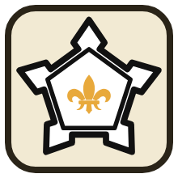
Fort
Interprète
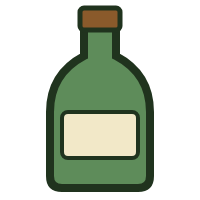
par eau-de-vie utilisée
MALUS · −1 DÉ CHACUN
Mission
par expédition rivale active dans la même zone de traite (sans surenchère)
Note : Le minimum de dé est 1.
2
Lancez une fois · gardez le meilleur dé
Accord
Échangez vos charges contre autant de tuiles, au choix. (+1 soupçon par eau-de-vie si dans une Mission)
Impasse
Pas d’échange.
Affront
Impasse, et la nation rompt l’alliance. Si déjà neutre, la zone est fermée et les peaux sont envoyées à Albany.
Festin
La nation devient alliée. Si déjà alliée, ajoutez une tuile de castor sec à la zone avant l’échange.
Après le troc, s'il y a eu de l'eau-de-vie, on lance un dé. Sur 1, ravage +1.
Surenchérir
Si un rival troque dans une zone de traite où vous avez un canot debout, vous pouvez coucher votre canot et lancer vos dés en même temps que lui.
Vos dés : 1 de base (au lieu de 2), plus bonus et malus. Le joueur actif n’a alors pas le malus du rival.
Partage : on classe tous les dés du plus haut au plus bas (égalité : joueur actif). Chaque dé prend 1 tuile contre 1 charge. On répète l’ordre autant de fois qu’il faut.
Trafiquer
Dans une zone de traite, une expédition essaye de trafiquer de la fourrure de castor contre 1 eau-de-vie. Lancez 1 dé. Vous pouvez recommencer, avec 1 dé supplémentaire à chaque essai.
Mission : trafic interdit.
et +
Accord
Piochez une tuile de castor sec.
Affront
Perte de l’eau-de-vie, soupçon +1, ravage +1. Si le nombre de dés lancés > nombre de voyageurs de l’expédition, perte de l’expédition.
À Montréal
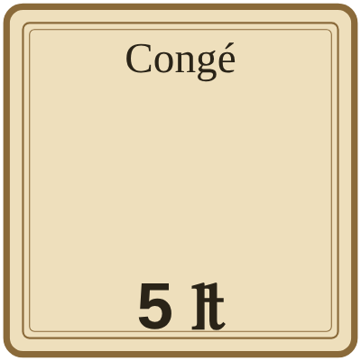
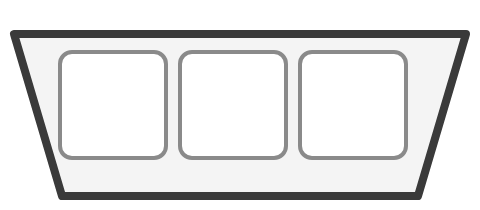
Monter une expédition
Composez une ou plusieurs expéditions : congé ou coureurs des bois, canot, charges, voyageurs. Payez, puis posez les canots sur un portage adjacent à Montréal.
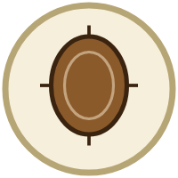
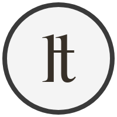
Vendre des fourrures
De votre entrepôt : à Montréal, au prix du castor ; à Albany, au prix du castor +1.
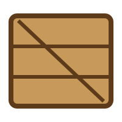
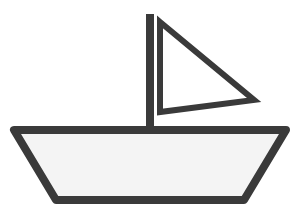
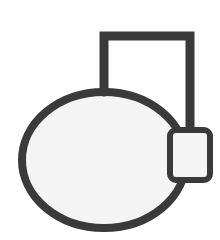
Investir
Achetez un canot, des marchandises ou de l’eau-de-vie au Marché de Québec, ou des parts de navire ou de distillerie.
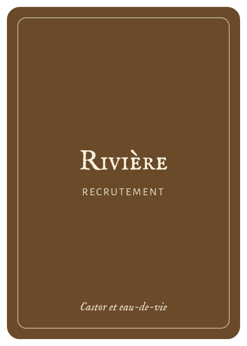
Recruter
Achetez une carte de la Rivière.
Actions gratuites
une par tour, avant ou après votre action
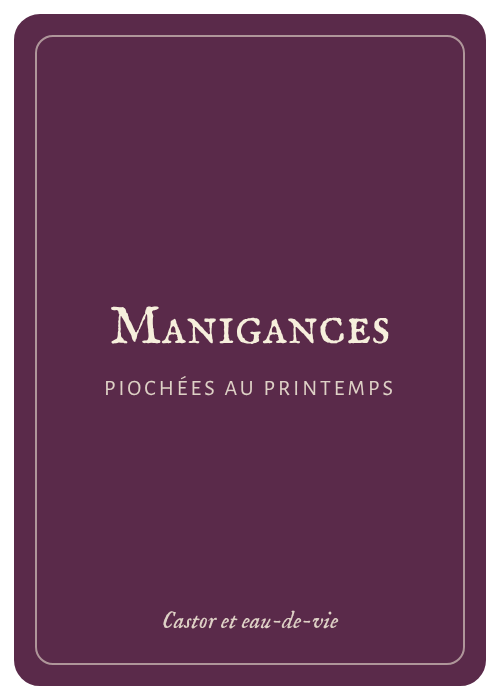
Jouer une carte
De votre main, en respectant sa condition.
Faire partir votre navire de Québec
Avant octobre : 1 ₶ de faux fret par place vide.
Échanger entre joueurs
À prix négocié : 1 canot, ou jusqu’à 5 charges ou peaux.